Theoretical background¶
Introduction to Atomic-scale Modelling of Fracture¶
Fracture is the main lifetime limiting failure mode of many materials, from metals to ceramics and glasses. There are two broad classes of fracture: brittle and ductile.

Brittle and ductile failure of steel, at low and high temperature respectively. Image credit: Internet Electron Microscopy website, UMIST
In brittle fracture, there is no plastic deformation, and failure occurs along particular low-energy cleavage planes. In contrast, ductile materials such as steel tend to fail with a large amount of plastic deformation (or ‘necking’), pulling apart to leave rough fracture surfaces. The same patterns are evident upon closer examination: brittle cracks are found to be atomically sharp, proceeding bond by bond, while ductile cracks remain rough at the microscale, driven by the formation and coalescence of microscopic voids.
{kind=link}
Brittle and ductile failure mechanisms, for silica and aluminium respectively. Image credits: C. Marlière and A. Weck.
Silicon is known to be an ideally brittle material, as shown by the image below. Below the brittle to ductile transition, at around 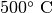, silicon cleaves atomically smooth fracture surfaces (left and centre panel; sample in central panel is tilted to show the crack front). At higher temperatures, fracture is ductile, with the emission of multiple dislocations from the tip (right panel).

Transmission electron microscopy (TEM) images of a crack in silicon. Image reproduced from [Lawn1993].
Fracture Mechanics¶
The study of fracture mechanics dates back around 100 years, to Griffith, who first proposed a thermodynamic energy balance criteria to understand when cracks will propagate [Griffith1921]. The key idea is that stress concentrates at pre-existing flaws: this was motivated by the observation that materials break at much lower loads than the theoretical stress needed to break their chemical bonds For example, in glass, the theoretical strength is given by
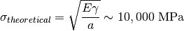
where  ,
,  and
and  are the Young’s modulus, surface
energy and bond length, respectively.
are the Young’s modulus, surface
energy and bond length, respectively.
For a slowly-moving crack of length c in an infinite plane, the well-known Griffith criterion for fracture propagation is based on thermodynamic energy balance between the release of elastic energy in an area proportional to c2 and the cost of creating new surfaces, which is proportional to c, as illustrated below.

This leads to a Griffith fracture strength for glass of
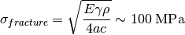
which is much lower than the theoretical strength. Here the additional
parameters are  , the radius of curvature and the crack
length c. The effect of stress concentration increases for sharper and
longer cracks.
, the radius of curvature and the crack
length c. The effect of stress concentration increases for sharper and
longer cracks.
The Griffith criterion leads to a critical length  below which it is
not energetically favourable for cracks to grow, since the elastic energy
released does not exceed the surface energy cost. Below , cracks
prefer to close up, meaning that not all flaws are unstable. This explains why
it makes sense to measure the length of cracks e.g. on aeroplanes, so that small
flaws can be identified and treated before they become critical.
below which it is
not energetically favourable for cracks to grow, since the elastic energy
released does not exceed the surface energy cost. Below , cracks
prefer to close up, meaning that not all flaws are unstable. This explains why
it makes sense to measure the length of cracks e.g. on aeroplanes, so that small
flaws can be identified and treated before they become critical.
In fracture mechanics it is common to use the energy release rate  to
describe the flow of energy to a crack tip. is the driving force for
crack propagation. It is defined by
to
describe the flow of energy to a crack tip. is the driving force for
crack propagation. It is defined by
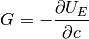
where 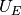 is the total strain energy and c is the crack length.
The Griffith criterion can be reformulated in terms of to show that
crack propagation becomes favourable when
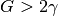
where is the surface energy density, i.e. when the energy flow to
the crack tip exceeds the cost of creating two new surfaces.
Atomic scale modelling of fracture¶
Much work has been done to understand fracture at the continuum level (see, e.g. [Freund1998] and [Lawn1993]), but here we would like to simulate fracture at the atomic level, to examine the combined effects of stress and chemistry (‘chemomechanics’). A first approach would be to use classical interatomic potentials to carry out molecular dynamics (MD). However, as we will see in Step 2: Classical MD simulation of fracture in Si, most classical potentials fail to accurately reproduce brittle fracture. This is due to stress concentration which has been shown to diverge as 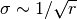 near a crack tip [Irwin1948], leading to anharmonic stretching and rupture of bonds, which is typically not well captured by simple interatomic potentials.

Irwin near-field solution for  for a singular crack.
Black is zero stress and yellow very high stress; note the divergence at the
crack tip.
for a singular crack.
Black is zero stress and yellow very high stress; note the divergence at the
crack tip.
Most potentials overestimate what is called the lattice trapping barrier, the energy barrier to bond breaking at a crack tip that arises from the periodicity of the crystalline lattice (in contrast to continuum methods where the crack tip advances continuously). This means that when fracture eventually does occur, there is too much energy available, which is then dissipated by a variety of plasticity mechanisms such as dislocation emission. This leads to results in contrast with the expected brittle behaviour.
Interestingly, however, continuum theories and simple potentials agree with one another until surprisingly close to the crack tip (~1nm), where non-linear effects become important, as illustrated in the figure below.
{kind=link}
Atomic and continuum calculations for the stress along the line ahead of a crack tip in silicon. Agreement is excellent beyond ~ 2 nm from the tip. Reproduced from G. Singh, J.R. Kermode, A. De Vita, R.W. Zimmerman, in prep. (2013).
The region where atomistic and continuum theories disagree is the non-linear process zone, where chemically interesting things are happening. Here, we would like to treat this region at a quantum mechanical (QM) level.
Coupled multiscale approach¶
QM approaches such as density functional theory (DFT) do correctly describe bond-breaking in silicon. However, the strong bidirectional coupling between bond-breaking at the crack tip and the long-range stress field driving fracture necessitates a multiscale approach. The reason a fully DFT approach is not practical is that the boundaries of the model system must be placed far enough away from the crack tip not to affect the results, which means that large cells containing tens to hundreds of thousands of atoms are needed. This exceeds the current capabilities of most QM approaches. Fracture is perhaps the archetypical coupled multiscale problem, with thousands of atoms contributing to the elastic relaxation of the near-tip region. We will describe how classical and QM descriptions can be coupled to study problems in fracture using the ‘Learn on the Fly’ (LOTF) approach in more detail later in this tutorial.

Hierarchy of materials modelling techniques, showing simultaneous coupling of QM methods and empirical interatomic potentials. Image source: G. Csányi.
Thin strip loading geometry and elasticity theory¶
We will use the thin strip fracture loading geometry illustrated below for our fracture simulations, where the load is applied by displacing the top and bottom surfaces.

The advantage of this setup is that the energy release rate G does not depend on the crack length, and can be found analytically by considering the energetics of an advancing crack.
The horizontal edges of the strip are given a uniform normal displacement 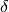, so the applied strain is 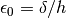. Far ahead of the crack, the strip is in uniaxial tension: 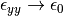 as 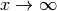.
The stress far ahead of the crack is given by 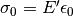, and therefore the elastic energy per unit length and per unit thickness far ahead of the crack tip is
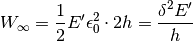
where 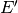 is the effective Young’s modulus.
Far behind the tip, the energy density is zero. Since no energy disappears through the clamped edges, if the crack is to advance by unit distance, a vertical strip of material with energy density 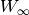 is effectively replaced by a strip with energy density zero.
The energy supplied to the crack tip is therefore equal to , so the energy release rate is simply
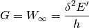
In our simulations we will use periodic boundary conditions in the  direction, so we have plane strain loading (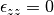), which
means that the effective Young’s modulus is given by
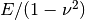, where is the Young’s modulus in the
direction, so we have plane strain loading (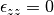), which
means that the effective Young’s modulus is given by
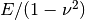, where is the Young’s modulus in the  relevant
direction and
relevant
direction and  is the Poisson ratio, so finally we have
is the Poisson ratio, so finally we have
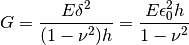
We can see that, in order to relate the strain we apply to the system
with the energy release rate, we will need to calculate the Young’s
modulus and Poisson ratio for our model material. We will see how to
do this from the elastic constant matrix  below.
below.
Classical interatomic potentials for silicon¶
The Stillinger-Weber [Stillinger1985] interatomic potential provides a fairly good description of many properties of crystalline and amorphous silicon. Its functional form is a two- and three-body expansion suitable for the representation of highly directional covalent bonds between Si atoms:
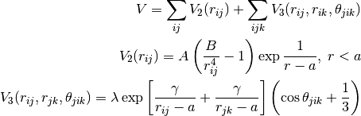
In particular, the three-body term stabilises the ideal tetrahedral structure with respect to all the other possible structures. The parameters of the SW potential were determined by fitting experimental data with the constraint that the diamond-like structure must be the most stable periodic arrangement of particles al low pressures.
Although this potential has not been fitted to the Si elastic constants, it gives a reasonable description of all of them. As we will see during this step, however, the SW potential fails to describe the brittle fracture of silicon. A number of interatomic potentials have been developed to go beyond the basic description of Si provided by the SW potential (e.g. [Swadener2002], [Vink2001] [Buehler2006], [Pizzagalli2013]), however, they are usually not sufficiently transferable to provide a general description of the inherently quantum-mechanical processes occurring at the tip of a crack. As a consequence, treating the tip at the QM level using hybrid QM/MM methods is necessary to perform accurate MD simulations of brittle fracture in Si. Here, we will use the SW potential because its simple functional form and its speed make it a suitable choice for a multiscale QM/MM approach, where only an accurate description of the Si crystal far from the crack tip is required.
In this step, we will use the SW potential to perform a classical MD simulation of the crack propagation in the NVE ensemble. The velocity Verlet scheme [FrenkelSmit2001] will be used to integrate Newton’s equations of motion.
QM/MM Force Mixing and the ‘Learn on the Fly’ scheme¶
In this last part of the tutorial, we will perform an accurate MD simulation of Si fracture using the “Learn on the fly” (LOTF) hybrid QM/MM technique [DeVita1998], [Csanyi2004]. In the present case, all atoms that are not suitably described by the [Stillinger1985] potential (our MM scheme) will be treated quantum-mechanically with the DFTB method [Elstner1998]. These atoms are those in the vicinity of the crack tip, where highly strained Si-Si bonds are present, and where formation and rupture of chemical bonds occurs during crack propagation.
Standard QM/MM techniques, usually developed for biological systems, adopt energy-based approaches. The total energy of the system is written as a combination of the QM energy, the MM energy and a QM/MM term, often specifically devised for a particular system, that takes care of the interaction between the two regions. While this approach allows the definition of a total energy which is conserved during the dynamics, the forces used to propagate the MD are not accurate enough because of the spurious effects due to the presence of the boundary between the QM and the MM regions. Moreover, the necessity to suitably “terminate” the QM region, does not allow the QM region to move during the simulation, which is, however, required if we want to follow the motion of a crack tip.
The LOTF scheme adopts a force-based scheme instead, which allows the QM region to move during the MD simulation and accurate forces to be calculated even at the boundaries of the two regions. While the details of the scheme have been thoroughly presented in a number of articles [DeVita1998], [Csanyi2004], [Csanyi2005], [Moras2010], [Kermode2008a], [Bernstein2009], we will here briefly explain the basic concepts that will allow us to perform the crack simulation.
Calculation of the forces: buffered force mixing¶
The first problem we have to face, when performing a QM/MM MD simulation is to calculate accurate forces. While the calculation of the MM forces, using a short-ranged potential (e.g. the SW potential) is trivially solved by inexpensively computing the MM forces on the whole system, the problem of calculating accurate QM forces is more complicated. The ultimate goal of any QM/MM approach is to perform a simulation where all the system behaves instantaneously as if it were fully QM. In a standard QM/MM approach, however, the QM forces would be calculated by carving the QM region out of the system and chemically terminating the resulting Si dangling bonds, for instance with H atoms. Even by using more complex termination strategies, it is generally not possible to mimic the presence of the surrounding MM system, and the forces on the atoms close to the artificially created “QM surface” are not accurate.
To solve this problem, at the expense of an increased computational cost, we increase the size of the QM region by adding a “buffer region”, as illustrated below. The calculation of the QM forces is carried out on a cluster made from the QM + buffer regions, after suitable termination with H atoms.

The finite buffer termination strategy. Force on the atoms in the buffer region (dark grey) are discarded to give accurate QM or MM forces on all atoms (right hand panel). Reproduced from [Bernstein2009].
The buffer region must be large enough to minimize the errors on the QM forces due to the presence of the outer artificial surface. The size of the buffer region can be determined through some tests (see this extension task) , and is typically around 8 A, or 4 neighbour hops, for Si. This near-sightedness of quantum mechanics is ultimately due to the locality of the density matrix in covalent materials.
Once accurate QM forces have been obtained, only the QM forces on the atoms belonging to the original QM region are used in the MD. The QM forces on the atoms in the buffer region, which are strongly affected by the presence of the outer QM surface, are discarded and replaced by the MM forces (as illustrated above). In this way, we can obtain good forces on all atoms in the system. These forces can be used in the MD simulation, provided that the conservation of the total momentum is restored. This can be enforced by subtracting the (typically small) mean force, so that the final QM/MM forces sum to zero.
It is important to have good elastic matching between the QM and MM models, so that there is no discontinuity at the boundary. For simple materials, this can usually be achieved by scaling the classical model in space and energy to match the lattice constant and bulk modulus of the QM model (for simplicity we omit this step in this tutorial, but the mismatch here is not too big).
Hysteretic selection of the QM active and buffer regions¶
A key advantage of the buffered force mixing approach is that the QM region can be redefined during a simulation. This works because new atoms first enter the QM calculation at the outer boundary of the buffer region, where they do not have a large effect on the forces at the centre, and therefore changing the QM region does not introduce large inconsistencies.
In this tutorial, the QM region will be updated during the MD simulation in order to follow the motion of the crack tip. When selecting the atoms that belong to the buffered QM region, it is important to minimise fluctuations in the set of QM atoms. This should be done in order to minimise the spurious heat generation due to atoms whose description changes from MM to QM, or vice-versa [Bernstein2009]. This change of description is inevitable when the QM region moves with the crack tip. However, solutions have to be found to minimise fluctuations due to oscillation.
A robust way to minimise fluctuations is to employ a “hysteretic” algorithm for the QM selection process [Bernstein2009]. In the context of a fracture simulation, atoms have to come within a certain inner radius 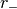 from the crack tip to become selected as QM active atoms (see the picture below). In our case, atoms have to come within 8 A from the crack tip to become part of the QM region. However, using the hysteretic algorithm, these atoms will remain QM until they move further than the outer radius 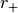 (where 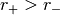) away from the crack tip. In our simulation, this outer radius will be 10 A. We refer to the current set of QM atoms in as the QM active region.

Hysteretic QM selection algorithm. For fracture simulations the black active region can be reduced to a single point at the crack tip. Reproduced from [Bernstein2009].
As well as using hysteresis to select the QM active atoms for which QM forces will be used, we can also use the hysteretic selection algorithm to minimise fluctuations in the buffer region. These radii apply to the distance from any of the QM active atoms, so the buffer takes the form of a shell of constant width around the QM atoms. Here we will use inner and outer buffer radii of 7 A and 9 A, respectively. This leads to overall QM active + buffer clusters with a radius of around 15 A, containing around 150 atoms, including terminating hydrogens (see the example cluster below).
Further tricks which can be used to stabilise the QM and buffer region include growing the regions using bond hopping rather than distance criteria, and using time-averaged positions [Bernstein2009]. For simplicity, in this tutorial we will use only the hysteretic selection technique.
LOTF adjustable potential and predictor-corrector scheme¶
The QM/MM forces calculated as just explained, using a buffered QM region, can be directly used to perform an MD simulation, provided that the total sum of the forces is constrained to be zero, as explained above. However, in many cases, and in particular in this Si crack case, we can use yet another “trick” to speed up our MD simulation, by at least a factor 10.
We first introduce a new Hamiltonian, which is the sum of the MM potential (the SW potential here) and of a so called adjustable potential. This potential has a general analytical expression and a set of parameters that can be adjusted. In this case, we will use a simple two-body linear ‘spring’ potential with the form
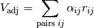
where  and
and  indicate a pair of atoms which are closer than an
arbitrary spring length (typically around 3 neighbour hops),
and 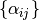 are the set of adjustable parameters. We then define
a fitting region, typically slightly larger than the buffered QM region.
indicate a pair of atoms which are closer than an
arbitrary spring length (typically around 3 neighbour hops),
and 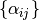 are the set of adjustable parameters. We then define
a fitting region, typically slightly larger than the buffered QM region.
Our adjustable potential is then used to fit the difference between the QM and the MM forces for each atom in this fitting region. (The functional form above is particularly suitable as it can be optimised using linear algebra). Of course, this difference will be zero for atoms in the fitting region that do not belong to the QM region. In this way, after a successful force matching, the gradient of our sum potential 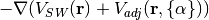 gives us the MM forces on the MM atoms and the QM forces on the QM atoms. Of course a very small error on these forces (typically 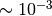 eV/A) is caused by requiring our forces to be the gradient of a single Hamiltonian. This is however of the same order as the error introduced by forcing the total sum of the forces to zero, and less than the error associated with computing QM forces using clusters with a finite buffer radius (which can be as much as 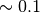 eV/A compared to a reference QM calculation in the full system with PBC). The figure below illustrates the force fitting process.

The definition of this new adjustable potential is very beneficial to our simulation because it allows us to employ a predictor-corrector algorithm that, as mentioned before, significantly speeds up our simulation. This scheme is based on the possibility of varying the values of the adjustable potential parameters in both time and in space (i.e. each two-body term of the potential has an independent parameter 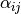). Once these parameters are adjusted to match the QM/MM forces in the fitting region, we do not necessarily need to perform this fitting procedure at the next time step. In many cases, in fact, the parameters would change very slowly with respect to the changing atomic positions. This means that the same parameters can be used for a small number of steps (e.g. 10 in our case), after which the expensive QM forces are recomputed, and then used to retune the parameters. This is the philosophy behind the ‘Learn on the Fly’ approach.
The predictor-corrector scheme works as follows, with reference to the illustration below:
1. Initialisation. The QM region is selected, the buffered QM/MM forces are calculated and the parameters of the adjustable potential are adjusted to reproduce the difference between QM and MM forces in the fitting region.
2. MD predictor: Extrapolation. The classical 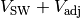 is used with the fixed set of adjusted parameters 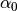 to evolve the dynamics of the whole system starting from the positions 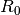 for a small number
of steps of size 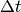 for a total time of 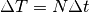.
3. QM/MM forces. The buffered QM region method is used to compute the QM/MM forces on the new configuration 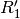.
4. Force matching. The parameters of the adjustable potential are tuned to reproduce the difference between the new QM forces and the new MM forces to give a new set of adjustable potential parameters 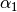.
5. MD corrector: Interpolation. The formerly predicted MD steps are now corrected by returning the system to , and re-running the dynamics with the adjustable potential parameters linear interpolated between and .
We then return to step 2. and iterate.

The number of extrapolation steps that can be made before the potential parameters change too much can be checked by keeping an eye on the force errors made by the LOTF scheme in comparison with doing a QM force evaluation at each time step: there is an extension task at the end of this tutorial to do exactly that.